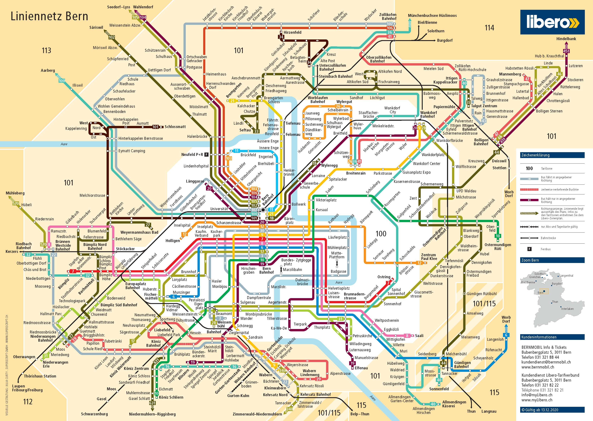

Travel to and in Bern
We are looking forward to welcoming you to Bern for the STAMP conference. Here are some useful tips on how to travel to and around Bern.
Arrival by plane
Some of you might arrive by plane, usually landing at Zürich Airport. From there you can take a train to Bern. The train ride takes about 1 hour and 20 minutes and can be regularly travelled without changing trains. Check here for available connections and tickets.
Arrival by train
Arriving by train is probably the most convenient way to get to Bern. The train station is located in the city center, with the conference venue (Uni Bern) directly next to it. The main station is ideally connected to the rest of the city and also houses some supermarkets that are open late. From the main station the way to the conference venue is easily found, but check our directions page for more details.
Getting around Bern
Bern is a very walkable city, especially if you are staying in the city center. However, if you are staying a bit further out, or you want to visit the outskirts of the city, like the Gurten for example, you can use the Bern local public transport system. Trams and busses traverse the city with a high frequency. In order to use these you need to purchase a Libero ticket for Zones 100 and 101. These are available at the ticket machines at every station or online under this link. They offer single tickets, day tickets and 6 trips tickets. Below is a map of Zones 100 and 101, so you may see where you can go with this ticket. Click the image to see it in full size.
If you still have questions, you can finde more information on the Libero website or ask us directly.
Save travels!